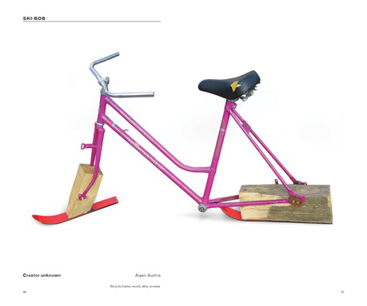

-
Important Stuff
by Tom Melick August 22, 2012
image from Arkhipov’s ‘Home-Made Europe,’ courtesy of FUEL.
Home-Made Europe: Contemporary Folk Artifacts
Fuel, 2012Determined to hang a picture on the wall but lacking a hammer, I recently assigned half a loaf of bread to do the job. At first it felt awry and a little Chaplinesque, but the loaf had spent the past few weeks in a neglected corner of the pantry and had become so stale that it had taken on the characteristics of a small but heavy rock. The nail sailed into the wall after one hit and I found myself eyeballing this lump of ossified dough and praising it as a marvelous creation. Who knew it could defy its fate and re-invent itself in the spirit of necessity, emerging as an unlikely and spontaneous hammer? Of course the bread hadn’t done anything but follow the logic of its starchy molecules, but there it was, in a context where the appropriate tool was missing and any solid, weighty, cudgel-like implement would do.
I wondered if my bread-hammer would qualify for Vladimir Arkhipov’s Home-Made Europe: Contemporary Folk Artifacts. Upon reflection, probably not, but I did feel as though I’d touched, however pathetically, on a nerve that dictates many of the inventions and utilitarian mash-ups documented in the book. If the title is familiar it’s because this is the second of its kind, the younger sibling of Home-Made: Contemporary Russian Folk Artifacts (2006). I remember picking up this book with a friend, and sensing the air and aura of a rare find, even though we were in a multi-story bookshop. It is difficult to know why a book emanates that kind of vapor. In this case, it seemed to have something to do with how it had organized and compressed a universe of stuff. How it had observed, and through that observation attributed value to what was previously obscured. Or, was it just how it quietly parted that vast and turbulent sea of crap in order to demarcate an agenda? Does Arkhipov’s latest version achieve a similar feat? I want to nod and give a phlegmatic yes, but the truth is I’m still vacillating.
The natal conditions for Arkhipov’s category of ‘thing’ are more or less explicit: the prevailing, mass-produced object is absent so an unlikely material, item, bit or gobbet is recruited and rubbed with gumption. We’re probably all familiar with this kind of greenhorn ingenuity, where objects are jammed into reality in the same way you might fashion an ersatz bathplug out of a scrunched up plastic bag (this works), or appoint a spent piece of chewing gum to stick a photograph on the wall (this sometimes works, depending on the brand of gum). Arkhipov’s biography indicates that he probably knows a thing or two about trying something out and seeing if it sticks; having worked as an engineer, a physician and now as a self-taught artist. He has maintained the ‘Post-Folk Archive’ or ‘Museum of the Handmade Object’ (two iterations of the same project) since 1994, of which the two books draw from. If you’re willing to pilot through a puzzling website where the archive continues to grow google “powerstrip Arkhipov”.
Back to the book. It contains 221 examples of home-made-hand-made artifacts from around (mostly rural) Europe, and is usually accompanied by the maker’s passport-sized photo and a brief account of how the object came to be, which Arkhipov records on a dictaphone and then transcribes. In this way, the book has a pace similar to a collection of show-and-tells or untidy short stories. The pages are peppered with anecdotal vim, colloquial commentary, complaints and taciturn (occasionally bordering on frustrated) explanations about how the object functions, its history, why it exists at all. This makes for an eccentric assortment of talk — the artifacts are commonly described in a flat and direct manner that comes from earnest, often slipshod, conversation.
There is a ‘summer shower’ in Yuzhonye Butovo, Moscow, as recounted by Boris Petrovich:
There’s not much to tell, it’s a summer shower. Well, the man who lived next door worked as a bus driver. There were loads of old broken bus doors at the bus depot, doors that had been written off. So he decided to use them. He put them together here, fixed them together to make corners, like this — so they stand up, they don’t move. They’re heavy, sturdy, they stay up. That’s it…
A toy machine gun (one of the many imitation weapons for kids in the book) from Staritsa, Tver region, Russia, begrudgingly described by its maker Petr Naoumov:
I’m not going to talk about it, what’s to tell anyway? It’s obvious isn’t it? I made it for my son to play with. He likes it…I made it with whatever I had at hand. The trunk is from when we knocked the apple trees down, there were branches lying around. There’s some plywood, the wheels are taken from his own pram, from when he was very little.
And who could ignore the marvelous verisimilitude and craftsmanship of Olga’s dildo?
Well I was stupid, I stole something and they locked me up. I was in prison in the Yaroslavl region [Russia], sent down for five years. We used to sew slippers and mittens, I was young so I was frisky. And where’s a girl to go without a man? It was real torture, you’d start humping any stick. A carrot or a cucumber – everyone does that. And what happens when you want one and there aren’t any around? So I found a piece of rubber and used that. Fuck knows what kind of rubber it is, I just carved it up with a knife when nobody was looking. I still keep it in case it comes in handy again!
Or, changing the focus to another tool of necessity — and possibly one of the most historically compelling and remarkable objects in the book — a spoon made by Ivan Kuzmitch Satchivko in Kiev, fashioned just after the second world war following the Nazi occupation of Ukraine:
My father worked in a factory, where he did reconstruction work. When any spare metal came along, he made things with it for family and friends: a plough of some sort or spade — people didn’t have anything, you see. Yet there was a lot abandoned, broken military equipment left in the fields. One day some relatives from the country brought him some aluminum from a downed German bomber, and asked him to make useful household things out of it: combs, spoons, mugs, bowls. Nothing went to waste, nothing was left of the wreckage when he’d finished. We used the crooked saucepans and frying pans that my father made for a long time. Then, when our living conditions improved, we threw everything away.
Except the spoon. The spoon survived. It’s objects like this that seem to challenge our definitions of design and what it really means to grapple with necessity and the material world. There is a sense of fate-redirected here; a crashed German bomber with all the weight of its history (the ideology behind its production, the workers who made it, its purpose, its pilot, its downfall) converted, eventually, into a domestic utensil. Sitting at this Ikea desk on this Ikea chair it’s difficult to completely comprehend that kind symbolic and material narrative, where an object has tumbled from a radically complicated past and context but simply exists as a spoon — used like any other. If we can confidently say that history is altered by objects, we also have to admit that objects alter history: they give a shape, and entangle history with the everyday.
This is what many contemporary artists spend their time doing. All you have to do is peer down the line of institutionalized ready-mades (look, for recent examples, at the work of someone like Gedi Sibony or Tom Sachs) to see an entire gang of objects revered for their ‘impoverished’ style and the way they ‘blur’ the line between life and art. I’m using quotation marks here because the problem is — and always has been — life doesn’t really care about art. How could it when it comes before it and remains after it? Art and life are in a perpetually unequal relationship and it’s clear which one wears the collar. In Arkhipov’s brief afterword he wonders about this, asking:
According to Aristotle, Art is an imitation of reality, so couldn’t creating the reality preceding this imitation itself be an important earlier stage of the artistic process? How is this creativity subtly different from Art?
It’s a good question. Phrased as a riddle it might sound something like: what comes before art, which could in fact be art, but is not art? Whatever the answer, Duchamp really screwed us. However, the objects collected in this book are semi-separate from this conundrum precisely because they inhabit a larger world, the world of use (dildo, toy, spoon, post box). This is what Arkhipov is seemingly obsessed with and ultimately where the power of his project resides. By simply paying attention to these used things — things outside professional categories or putative disciplines — he has managed to show some of the bits and pieces that escape standard notions of contemporary art and design and the slick belch of consumer goods. So, you might say that these objects sit in front of or beyond the canon of art and design simply because they ignore it.
And what about the proximity of these artifacts to DIY? Let’s be clear. There is nothing radical about Do-It-Yourself hobbies occurring on the weekend or in the garage of the eponymous retiree. It is the British artist Jeremy Deller, in the forward to Home-Made Europe, who is careful to separate this species of object from that of DIY, a hobby, he writes, “that seems so pleased with itself”. Deller, who has maintained his own ‘folk archive’ since 2000, views Arkhipov’s objects to have “a healthy disdain for traditional DIY values of finish and professionalism.” Indeed, DIY culture has never strayed too far from a well-stocked shop. Its emergence in the 1950s coincided with a wealth of new and available materials, hand-held electric tools and the introduction of the VCR (significant for the stream of instructional and home improvement videos). Add to this the baby boom, the value placed on home ownership and self-improvement and you have a recipe for varnished kitchen cabinets and birch wood spice racks, but that’s about it.
In honesty I’ve got nothing against this kind of weekend construction, but the value of this book seems to rely on a clearly defined area of creative production: design in the face of a lack of materials rather than an abundance. It is here that I think Home-Made Europe might lose some of its grip. While the examples I cited before come from Russia and the Ukraine, the book documents objects from eleven other countries around Europe. In Austria we find a basketball hoop fashioned out of a long piece of wood and an old bucket, in England we see a ‘yeast paddle’ made from an old frying pan (for stirring home-made beer), in Switzerland we admire a three-dimensional ice-cream menu carved from pieces of wood, in Italy we find an Italian dog sitting on a make-shift doggy bed. These objects are compelling, no doubt, but they also lack that ingenious brutality born from necessity that most of the Russian objects seem to possess.
This might be why Arkhipov’s first book, which focused solely on artifacts from Russia, came across with more urgency; a potency where the artifacts so perfectly represent the countries history of just not having that much. Perestroika — the policy reforms enacted by Mikhail Gorbachev in the 1980s that marked the dissolution of the Soviet Union and signaled a time of great absence — is mentioned (often casually) by many of the Russian contributors. Spreading across Europe in the recent version, it’s harder to get a sense of what these objects reveal beyond their individual inventiveness, but maybe this is enough. That we are in the midst of the European soverign-debt crisis goes unmentioned in the book, but is worth pondering. Can objects like these, no matter how funny or silly, take on the symbolic weight of the European financial debacle? What are the patterns, reoccurring contexts and solutions to common material problems? Can we read these artifacts as abstract yet physical by-products of global and national policies and politics? Or, does this merely patronize the singularity of their designs?
There will be those who flick through Home-Made Europe and chuckle at the zany forms and collaged crudity, relegate it to the category of loony-thingamajigs or show it off on a coffee table as a trophy that shines with enough obscurity and folkish charm to be deemed ‘interesting’. While the format and tone of the book certainly lends itself to this kind of fate (it is essentially a picture book) appreciating it solely in this way, I believe, misses the point. What we should notice here is the kind of ingenuity that is possible when confronted with a material world in fragments; a broken leg but no crutch, a heavy coat but no hanger. On occasions like this, it seems that you either become a designer or you don’t.